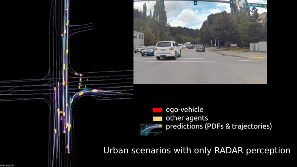
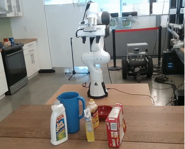
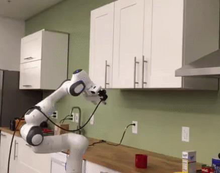
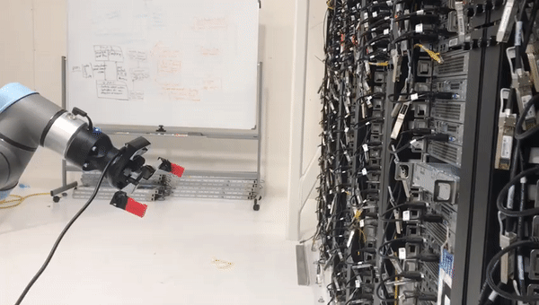

Lirui Wang
I am a first-year Ph.D. student advised by Prof. Russ Tedrake at the MIT Computer Science and Artificial Intelligence Laboratory (MIT CSAIL). Before coming to MIT, I received my B.S. and M.S. degrees at the University of Washington where I was very fortunate to work with Prof. Dieter Fox and collaborate with NVIDIA.
My research interest lies in the intersection of Robotics and Machine Learning. In particular, I am interested in developing algorithms and systems that can generalize and adapt in the complex and unstructured real-world environments.
Email: liruiw [at] mit (dot) edu
[Google Scholar] / [Github] / [Twitter]
Publications
|  |
PredictionNet: Real-Time Joint Probabilistic Traffic Prediction for Planning, Control, and Simulation
Alexey Kamenev, Lirui Wang, Ollin Boer Bohan, Ishwar Kulkarni, Bilal Kartal, Artem Molchanov, Stan Birchfield, David Nistér, Nikolai Smolyanskiy In arXiv, 2021 arXiv, Bibtex, Video, Blog |
{kind=link}
|  |
Hierarchical Policies for Cluttered-Scene Grasping with Latent Plans
Lirui Wang, Yu Xiang, Xiangyun Meng, Dieter Fox In arXiv, 2021 arXiv, Bibtex, Video, Website, Code |
{kind=link}
 |
Goal-Auxiliary Actor-Critic for 6D Robotic Grasping with Point Clouds
Lirui Wang, Yu Xiang, Wei Yang, Arsalan Mousavian, Dieter Fox The Conference on Robot Learning (CoRL), 2021 arXiv, Bibtex, Video, Website, Code |
|  |
Manipulation Trajectory Optimization with Online Grasp Synthesis and Selection Lirui Wang, Yu Xiang, Dieter Fox In Robotics: Science and Systems (R:SS), 2020 arXiv, Bibtex, Video, Website, Code |
{kind=link}
-
2021.9 - present, Massachusetts Institute of Technology
Ph.D. student in Computer Science -
2020.6 - 2021.3, University of Washington
Master of Science in Computer Science -
2016.9 - 2020.6, University of Washington (Summa Cum Laude)
Bachelor of Science in Computer Science
Bachelor of Science in Electrical Engineering
Education
- MIT EECS Fellowship (Xianhong Wu Fellow), MIT, 2021
- Bob Herbold Data Science Fellowship, UW, 2021
- Patricia Lynch and Theodora & Eugene Russell Memorial Scholarship, UW, 2020
- Lawrence & Lucille Frey Endowed Scholarship, UW, 2019
- Tau Beta Pi Scholarship, UW, 2018
Selected Honors
- TA, CSE 455 Computer Vision (UW, Winter 2021)
- TA, CSE 543 Deep Learning (UW, Autumn 2020)
- TA, CSE 473 Artificial Intelligence (UW, Winter 2020)
- TA, CSE 455 Computer Vision (UW, Autumn 2019)
Teaching
Misc Projects
 |
DeepIM Pose Tracking UW |
|  |
Server Mover Microsoft |
{kind=link}
 |
Auto Cooperation DJI |